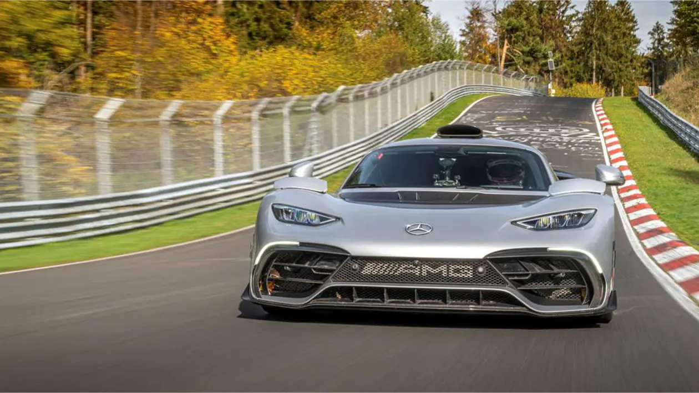
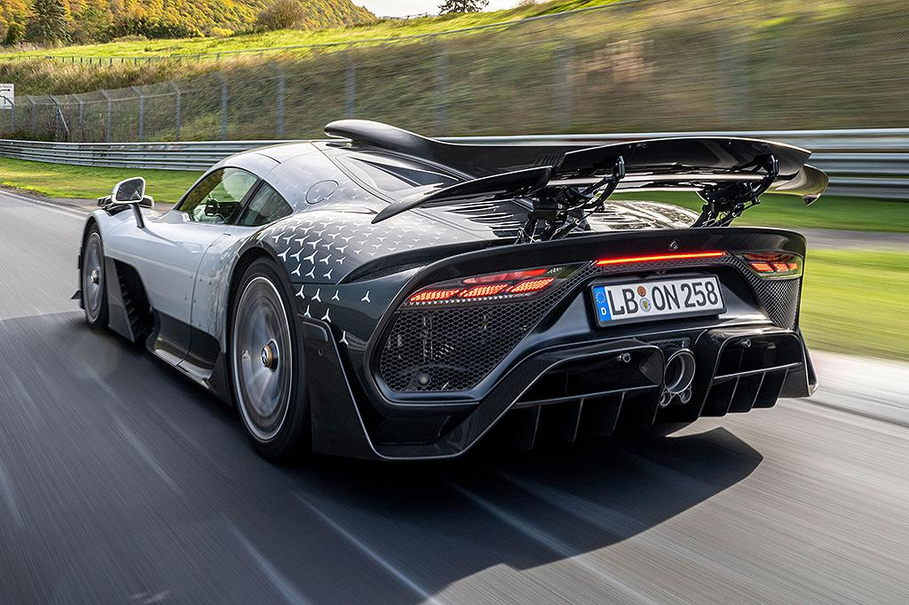
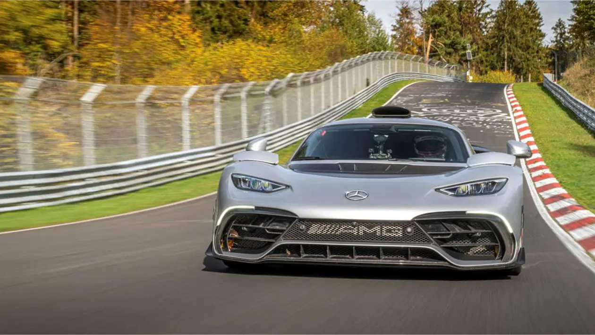
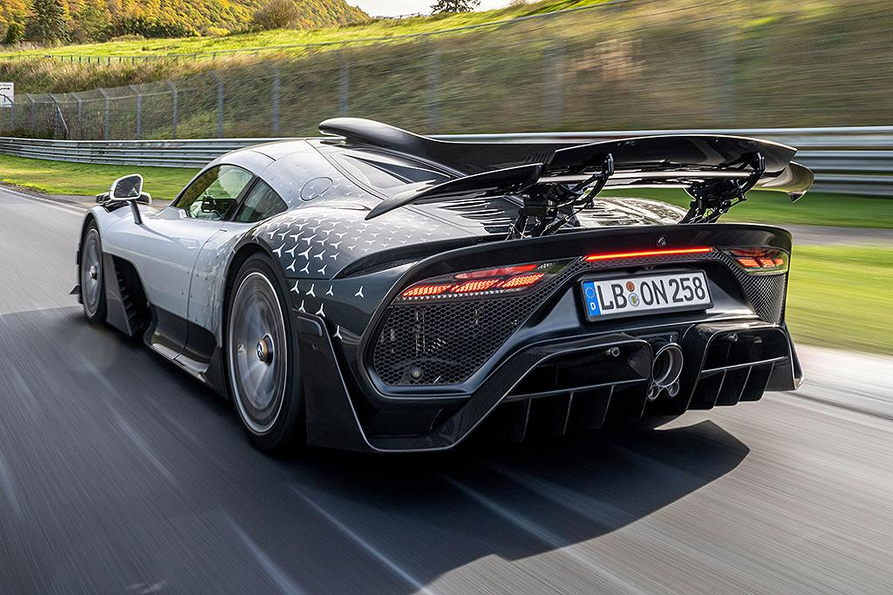

#1 Mercedes-AMG One
Mercedes-AMG One to jedno z najbardziej imponujących i wyjątkowych samochodów sportowych na świecie. Jest to hybrydowy hipersamochód, który wzbudza zachwyt zarówno na torze, jak i na ulicy.
Specyfikacje
Mercedes-AMG One jest napędzany przez zaawansowany silnik hybrydowy skonstruowany na bazie jednostki używanej w bolidach Formuły 1. Oto kilka kluczowych specyfikacji:
- Moc: Ponad 1,000 koni mechanicznych
- Silnik V6 o turbodoładowaniu
- System KERS (Kinetic Energy Recovery System)
- Maksymalna prędkość: Powyżej 350 km/h
- 0-100 km/h: Poniżej 3 sekund
Rekord na Nürburgring
Mercedes-AMG One ustanowił rekord na torze Nürburgring Nordschleife jako najszybszy samochód produkcyjny. Czas okrążenia wyniósł imponujące 6:35.183 minuty. To potwierdza niesamowite osiągi tego samochodu na jednym z najtrudniejszych torów wyścigowych na świecie.
Design
Mercedes-AMG One wyróżnia się futurystycznym i agresywnym designem. Charakteryzuje się aerodynamicznym kształtem, duzymi wlotami powietrza i imponującym tylnym spojlerem. To samochód, który nie tylko wygląda szybko, ale i jest szybki na torze.
 
